VisProWG: composizione visuale di applicazioni
L’elemento base all’interno di VisProWG è il widget:
Ogni widget in VisProWG è caratterizzato da:
-
un nome univoco;
-
alcune proprietà geometriche che ne descrivono la presentazione grafica;
-
un insieme, anche vuoto, di proprietà generiche;
-
un insieme, anche vuoto, di dipendenze funzionali.
L’attività dell’utente che indende creare una applicazione con VisProWG si articola in tre step fondamentali:
-
selezionare quali widget inserire nell’applicazione;
-
definire le interdipendenze tre le widget introdotte;
-
generare il codice relativo all’applicazione.
Stack tecnologico
Lo stack tecnologico utilizzato in VisProWG è descritto nella immagine seguente.
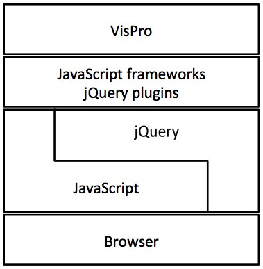
In particolare per schermare l’applicazione dalle differenze comportamentali che sussistono tra i vari browser si è provveduto ad introdurre un robusto strato di framework JavaScript:
-
JQuery: main JavaScriptFramework;
-
JQuery UI: gestione del’interfaccia grafica;
-
Raphael.js: gestione del disegno vettoriale;
-
Backbone.js: supporto al pattern architetturale MVC.
Inoltre sono stati utilizzati i seguenti plugin JQuery:
-
layout.js: supporto per il layout operativo;
-
beautifyOfCode: presentazione del codice generato;
-
getattributes.js: parsing file XML;
-
json.js: supporto al formato JSON.
Layout area di lavoro
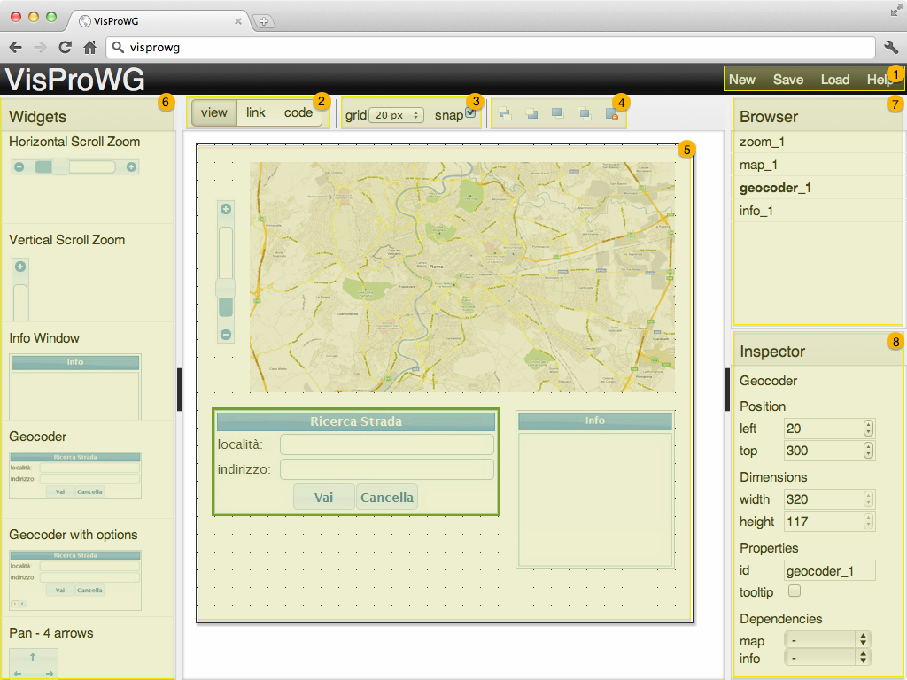
L’area di lavoro di VisProWG è suddivisa in diverse zone:
-
Toolbar Applicazione [1]
-
Toolbars:
-
Toolbar Perspettiva [2]
-
Toolbar Workspace [3]
-
Toolbar Widget [4]
-
-
Workspace [5]
-
Widget Library [6]
-
Browser [7]
-
Inspector [8]
Ognuna delle zone è deputata ad un preciso compito.
Toolbar Applicazione
La Toolbar Applicazione [1] è situata nella parte più in alto dell’interfaccia di VisProWG. Nella Toolbar applicazione l’utente trova i comandi per:
-
creare un nuovo progetto;
-
salvare e ripristinare il progetto in lavorazione (Save - Load);
-
accedere alla documentazione (Help);
Toolbars
Toolbar Prospettiva
La Toolbar Prospettiva permette di selezionare in quale modalità (o prospettiva) utilizzare il workspace.
Toolbar Workspace
La Toolbar Workspace permette all’utente di modificare le proprietà del workspace:
-
modificare il passo della griglia;
-
attivare/disattivare lo snap alla griglia.
Toolbar Widget
La Toolbar Widget permette all’utente di modificare alcune proprietà relative ad una widget, nell’ordine da sinistra verso destra:
-
portare una widget dietro a tutte le altre;
-
portare una widget dietro alla widget immediatamente sottostante;
-
portare una widget davanti ad una widget immediatamente soprastante;
-
portare una widget davanti a tutte le altre widget;
-
eliminare una widget.
Workspace
Il Wokspace, l’area di maggiore operatività dell’utente occupa la parte centrale dell’interfaccia.
È in questa area che l’utente compone la propria applicazione, definisce le relazioni di dipendenza tra le widget e preleva il codice.
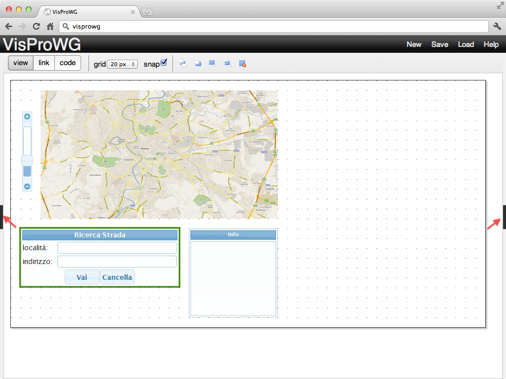
Per avere il massimo spazio dedicato al Workspace, l’utente può chiudere i pannelli laterali, agendo sui pulsanti indicati in figura.
Prospettive
Le modalità in cui l’utente può operare con VisProWG sono di tre tipi:
-
view;
-
link;
-
code.
Ogni modalità operativa è accessibile con il corrispettivo bottone nella Toolbar prospettiva.
In questa modalità operativa l’utente può definire l’interfaccia grafica della propria applicazione.
In questa modalità operativa l’utente può definire come devono essere soddisfatte le dipendenze delle diverse widget.
In questa modalità operativa l’utente può prelevare il codice relativo all’aplicazione disegnata.
Widget Library
La Widget Library presenta una anteprima delle widget che è possibile introdurre nel progetto. La specifica di tali widget avviene in un file descrittore, che permette la parametrizzazione dell’ambiente rispetto alle widget utilizzabili e al linguaggio di output.
Browser
In questa area di lavoro l’utente può avere una evidenza di tutte le componenti correntemente instanziate all’interno del progetto, oltre a poterne selezionare una tra quelle elencate.
Inspector
L’ispector, riporta puntualmente tutte le caratteristiche della widget attualmente selezionata. Tali caratteristiche sono raggrupate in:
-
dimensioni: per la visualizzazione e la modifica delle dimensioni di un widget;
-
posizione: per la visualizzazione e la modifica della posizione di un widget;
-
proprietà: per la visualizzazione e la modifica delle proprietà intrinseche di un widget;
-
dipendenze: per la visualizzazione e la modifica dei vincoli di dipendenza di un widget.
Una proprietà rilevante è l’id del widget che ne identifica la particolare istanza all’interno del progetto.
Workflow operativo
Di seguito si descrive una sessione operativa tipo di VisProWG, focalizzando sulle possibilità offerte all’utente dall’ambiente di visual programming.
Costruzione della UI
Operando nella modalità view l’utente compone l’interfaccia grafica della propria applicazione agendo direttamente con un approccio visuale sulle componenti introdotte nel progetto.
Le operazioni utente fondamentali eseguibili direttamente sulle componenti o attraverso l’Inspector (al fine di ottenere una maggiore precisione), consistono in:
-
inserimento di una widget;
-
selezione di una widget;
-
modifica di una widget o delle proprietà del workspace:
-
riposizionamento;
-
ridimensionamento;
-
-
eliminazione di una widget;
-
z-ordering;
Il sistema effettua verifiche sullo stato del progetto: in particolare controlla la condizione di sovrapposizione di due componenti.
Inserimento
L’operazione di inserimento di un nuovo componente inizia selezionando dalla Widget Library il componente prescelto.
Sul componente selezionato nella Library può essere eseguita una operazione di Drag&Drop nell’area Workspace.
Il componente viene quindi istanziato e posizionato nel punto di rilascio.
Il componente appena istanziato viene di default selezionato (bordo verde).
L’operazione di inserimento può essere eseguita più volte per introdurre tutte le componenti necessarie.
Selezione
La selezione di una widget può avvenire in due modalità:
-
eseguendo un click sulla componente stessa nel Workspace;
-
eseguendo un click sulla corrispondente voce del Browser.
Il widget selezionato viene evidenziato con un bordo verde nel Workspace, e il corrispettivo id viene reso con un carattere grassetto nel Browser.
Modifica
La modifica delle caratteristiche di un widget istanziato nel progetto può avvenire nell’Inspector o agendo direttamente nel Workspace per modificare proprietà grafiche (posizione, dimensione, z-order).
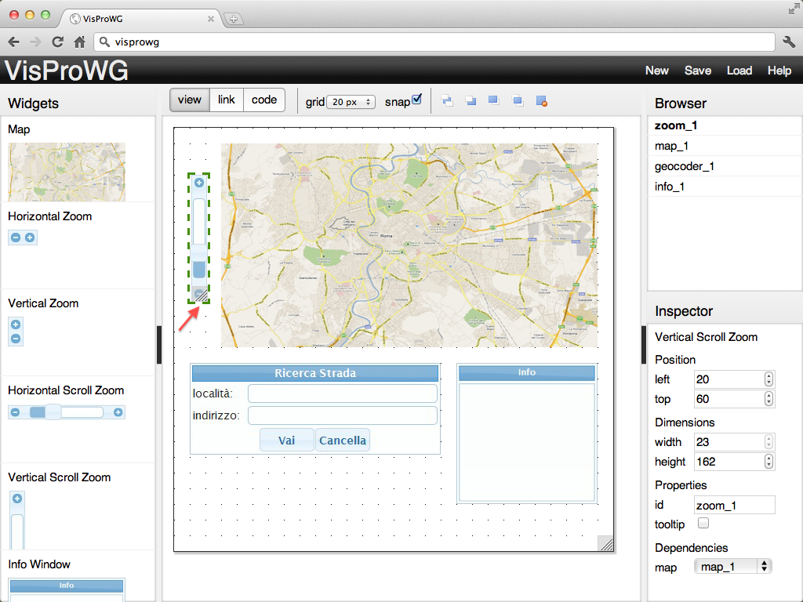
Il posizionamento di un widget può essere eseguito agendo nel Workspace direttamente con una operazione di Drag&Drop sul widget stesso, o via Inspector, agendo sulle proprietà top e left .
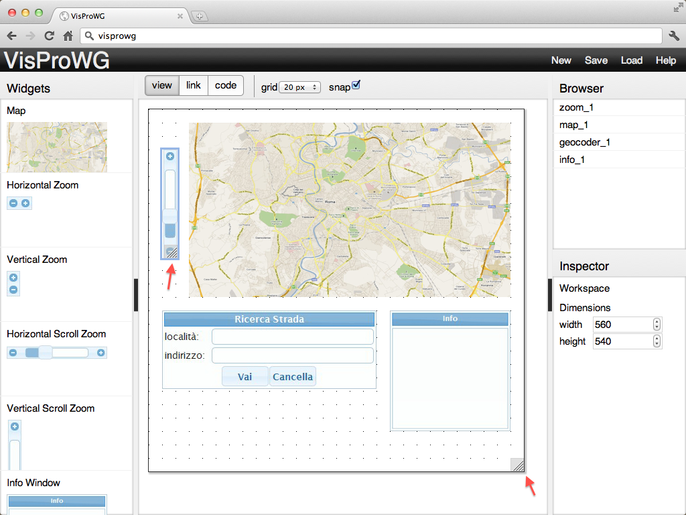
Il ridimensionamento di un widget può essere eseguito agendo nel Workspace direttamente con una operazione di Drag&Drop sull’ancora di ridimensionamento (angolo in basso a sinistra del widget stesso) o via Inspector agendo sulle proprietà width e height .
Non tutti i widget sono ridimensionabili: un widget non ridimensionabile non è provvisto dell’ancora di ridimensionamento
È possibile eseguire l’operazione di ridimensionamento anche sul Workspace, che, come mostrato in figura, è infatti provvisto di ancora di ridimensionamento.
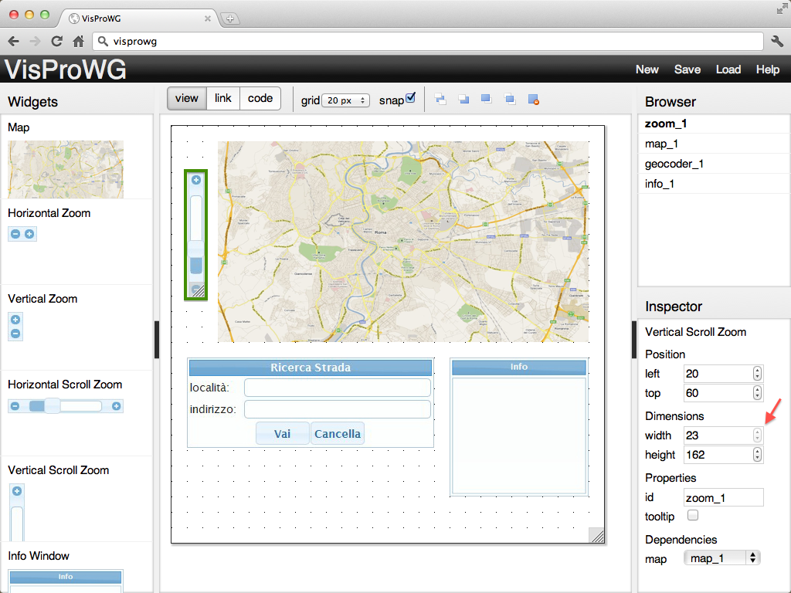
Taluni widget possono presentare un ridimensionamento vincolato ad una sola delle due dimensioni.
In tal caso il relativo campo nell’Inspector risulterà inattiva, quindi non utilizzabili per operare la modifica.
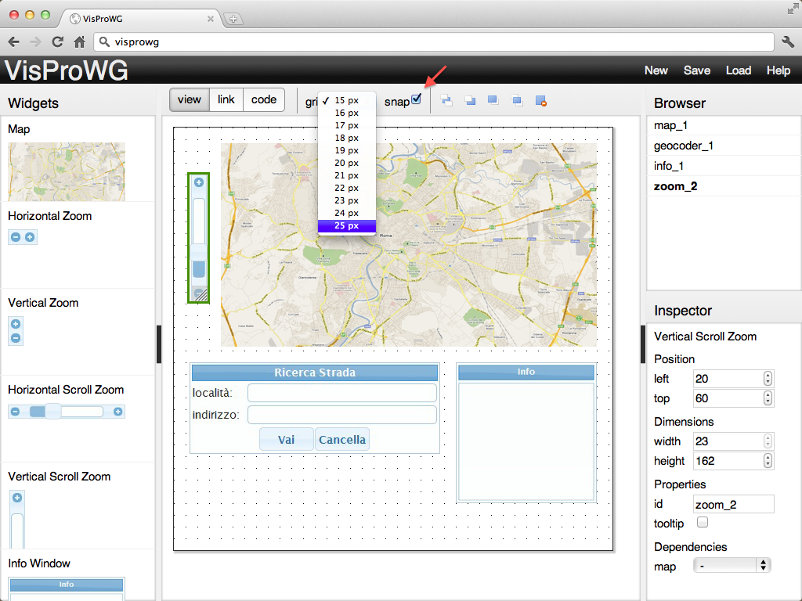
Agendo sul bottone snap nella Toolbar Workspace è possibile attivare o disattivare il posizionamento e il ridimensionamento vincolato alla griglia.
Il passo della griglia è modificabile sempre nella Toolbar Workspace, come mostrato in figura.
Eliminazione widget
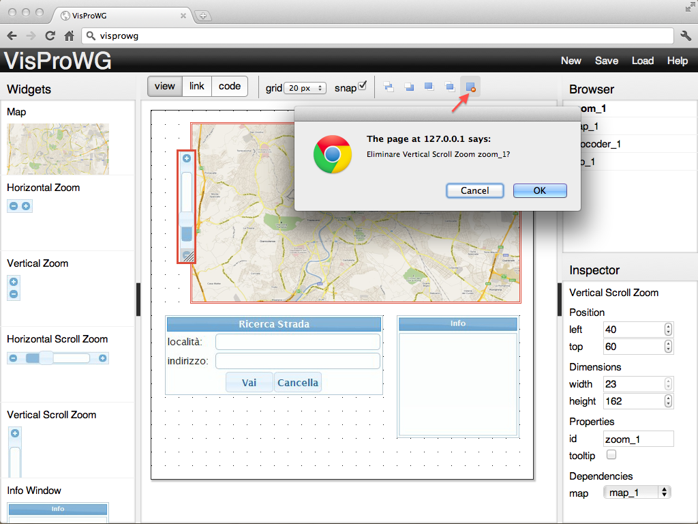
Ogni componente inserito può essere eliminato previa selezione agendo sul bottone Trash presente nella Toolbar Widget.
L’eliminazione del componente avviene solo successivamente ad un esplicita conferma dell’utente.
Z-ordering

Lo z-order relativo delle componenti presenti all’interno del workspace può essere modificato selezionando un componente ed agendo sui bottoni bottom, down, up, top situati nella Toolbar Widget.
Il bottone bottom porta la componente selezionata dietro a tutte le altre istanziate nel progetto.
Il bottone down porta la componente selezionata dietro alla componente ad essa immediatamente retrostante.
Il bottone up porta la componente selezionata davanti alla componente ad essa immediatamente antistante.
Il bottone top porta la componente selezionata dietro a tutte le altre istanziate nel progetto.
VisProWG esegue un controllo costante sulle posizioni delle componenti: la condizione di sovrapposizione di due widget è immediatamente notificata (figure precedenti) con un bordo rosso.
Una leggera trasparenza viene applicata i widget sovrapposti per consentire di individuarne di eventualmente nascosti.
Definizione delle dipendenze
Ogni widget presenta zero o più dipendenze funzionali verso altre widget di un certo tipo.
L’utente può definire in quale modo soddisfare una dipendenza utilizzando la modalità operativa link o agendo sull’inspector nel gruppo dipendenze.
|
|
Ognuna delle dipendenze funzionali di una widget può essere opzionale o mandatoria. In caso di dipendenza funzionale mandatoria non soddisfatta, VisProWG non genera il codice dell’applicazione ma avverte l’utente delle mancate relazioni. |
Nella modalità operativa link l’utente definisce come soddisfare le dipendenze funzionali, andando a specificare un DAG (grafo diretto aciclico) delle dipendenze.
In tale grafo le widget instanziate sono rappresentate da nodi, mentre gli archi orientati, ovvero coppie ordinate di nodi (i,j), rappresentano che la dipendenza del widget i è soddisfatta dal widget j.
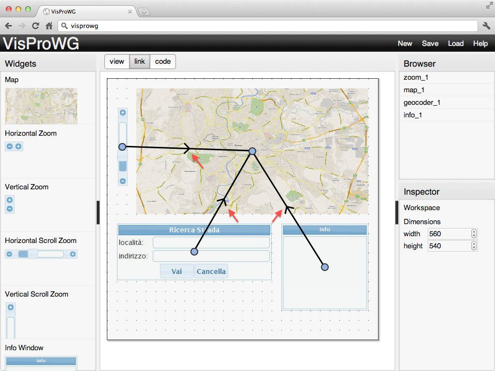
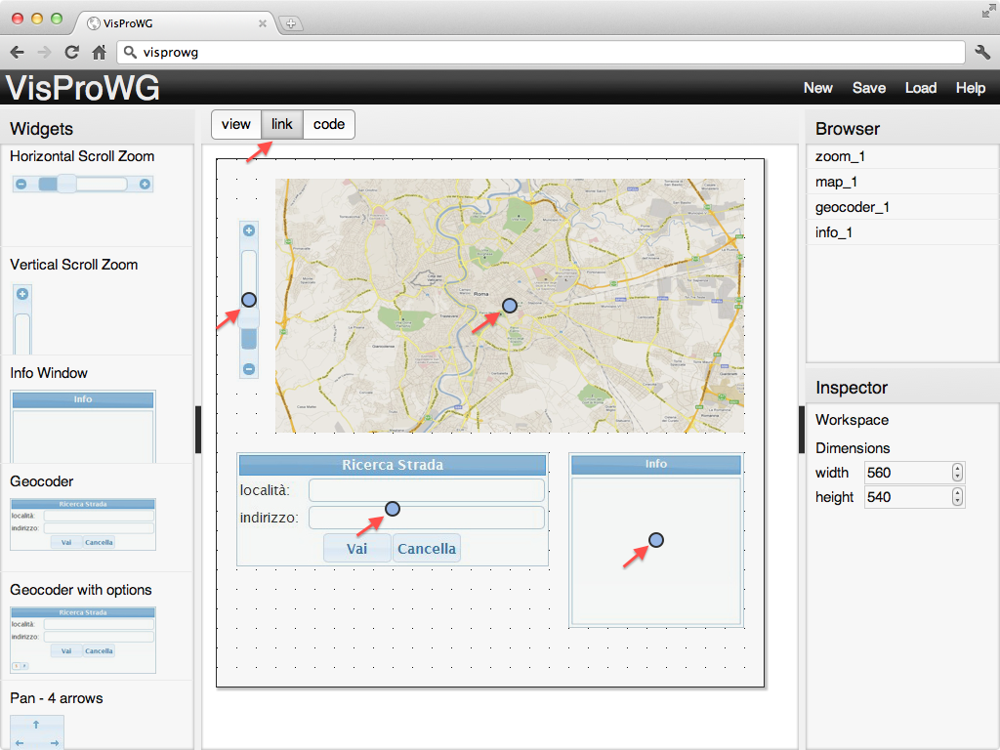
Creazione link
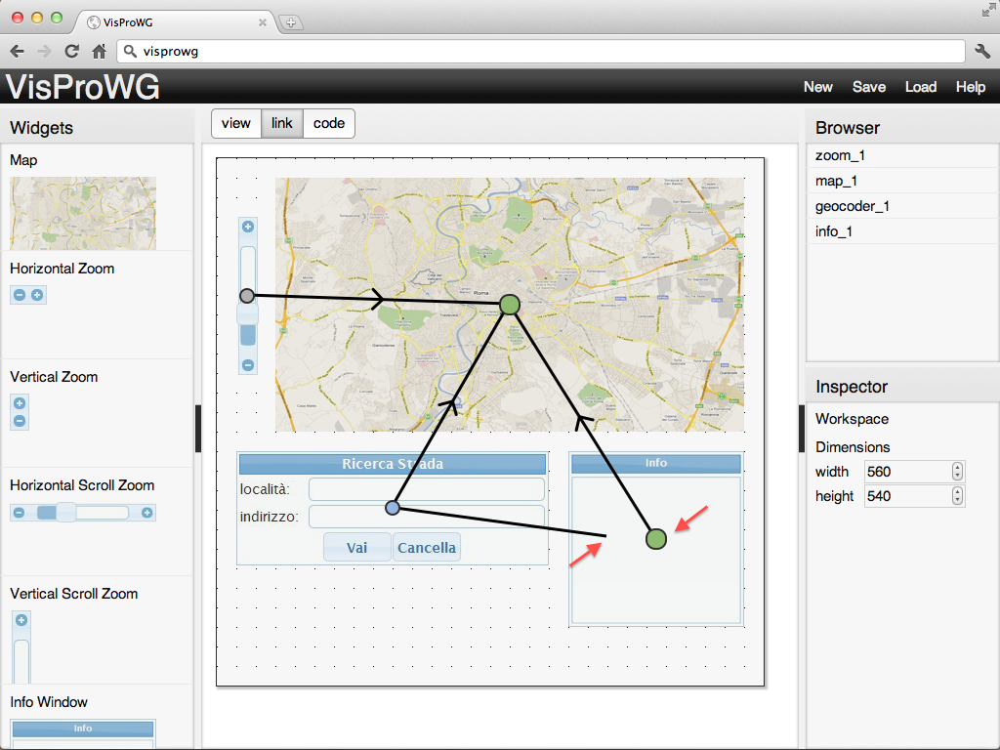
L’utente può introdurre un link tra due widget agendo tramite Drag&Drop sul linker del widget origine. Il linker del widget destinazione del link sarà quindi l’area su cui effettuare il Drop.
Durante il trascinamento, i linker dei widget che possono accettare il link danno riscontro di tale possibilità diventando verdi e più grandi. Al contrario, i linker dei widget che non possono accettare il link si disattivano, diventando grigi.
Una volta effettettuato una freccia nel mezzo del link indicherà il verso dello stesso.
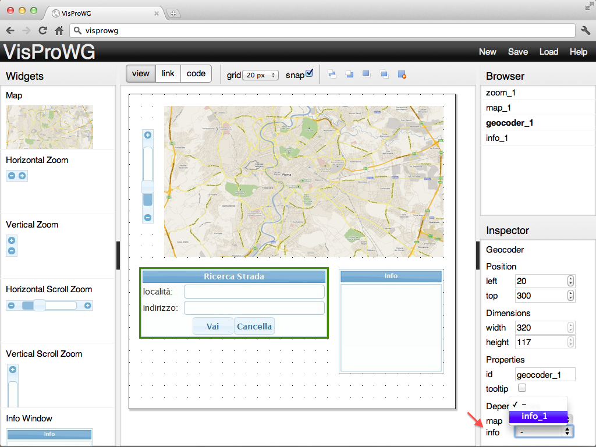
L’utente può generare un link anche senza passare alla modalità operativa link ma agendo direttamente dall’Inspector sulle dipendences, selezionando dal menu a tendina l’id del widget verso cui si vuole creare il link.
Ogni widget può avere multipli archi entranti, ovvero link multipli. Tale circostanza viene a significare che tale widget soddisfa la dipendenza funzionale di molteplici widget.
Eliminazione link
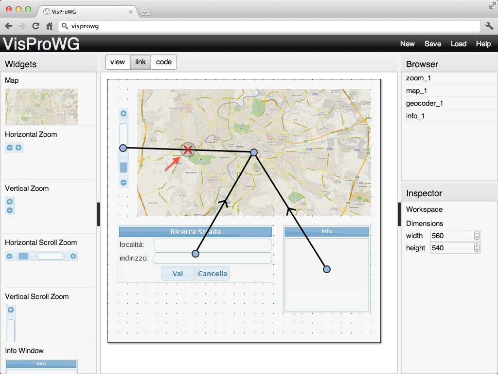
Per eliminare un link l’utente porta il mouse sulla freccia che indica la direzione del link da eliminare.
La freccia che indica il verso del link diventa una X.
Un click del mouse su tale X elimina il link.
L’eliminazione, così come la creazione di un link può avvenire direttamente dall’Inspector, nell’area dipendences.
In tal caso l’utente deve selezionare la voce nulla dal menu a tendina.
Generazione codice
Ultimata la composizione dell’applicazione, l’utente può passate alla modalità operativa code nella quale viene presentato il codice relativo all’applicazione da esso creata.
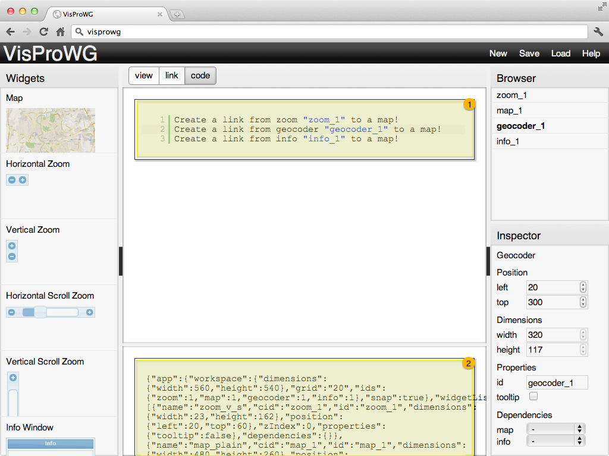
La vista presentata all’utente è divisa in due parti:
-
prelevamento del codice [1];
-
salvataggio dello stato (descritto in seguito).
Validazione
Prima di presentare il codice generato, VisProWG provvede ad effettuare un controllo di consistenza circa il soddisfacimento di tutte le dipendenze funzionali mandatorie.
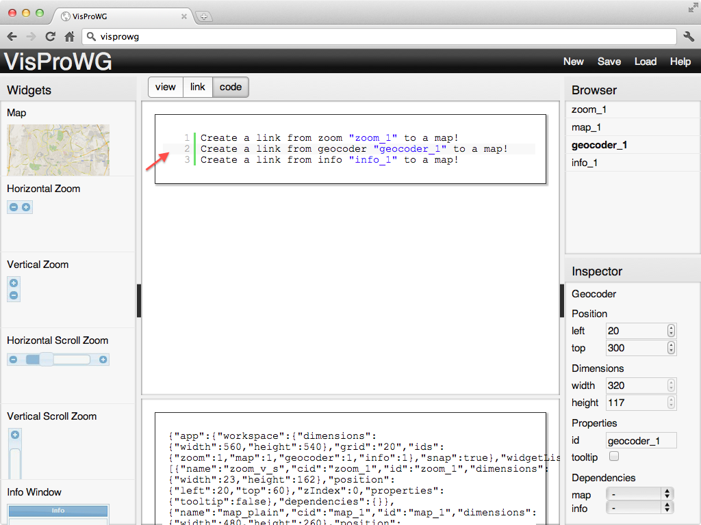
Qualora non fosse soddisfatta la totalità di quest’ultime, invece di presentare il codice, VIsProGW fornisce una indicazione circa quali dipendenze soddisfare per arrivare ad avere uno stato valido.
Esportazione del codice
Il codice presentato può essere comodamente copiato negli appunti mediante l’apposito bottone.
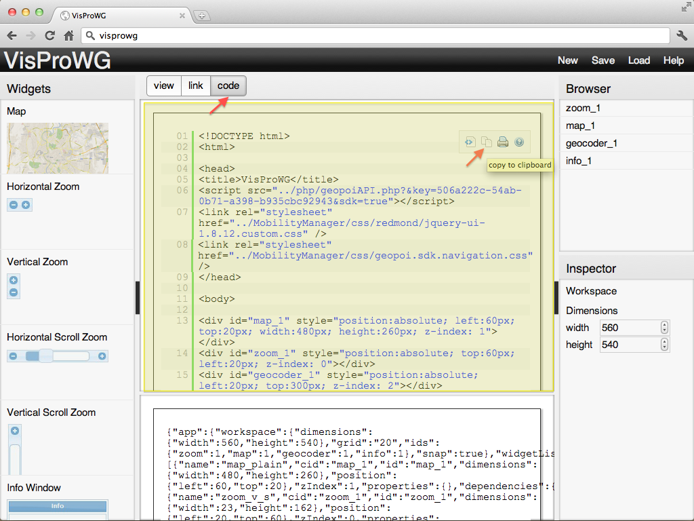
Una finestra di alert notifica all’utente il successo dell;operazione di copia.
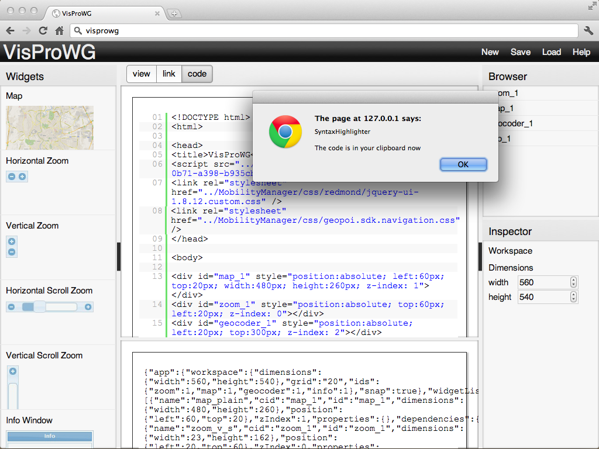
Gestione dello stato di un progetto
Lo stato del progetto è gestito dalla Toolbar Appliczione.
Nuovo progetto
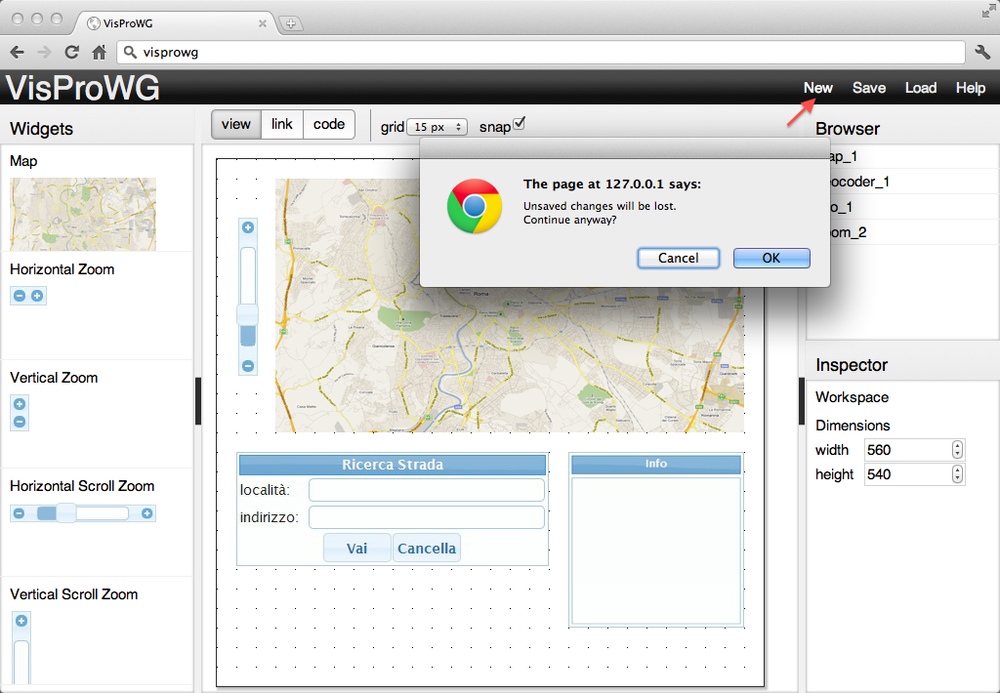
L’apertura di un nuovo prgetto vuoto avviene agendo sul pulsante New.
Un alert ricorda all’utente che tutte le modifiche non ancora salvate andranno perse.
Salvataggio dello stato
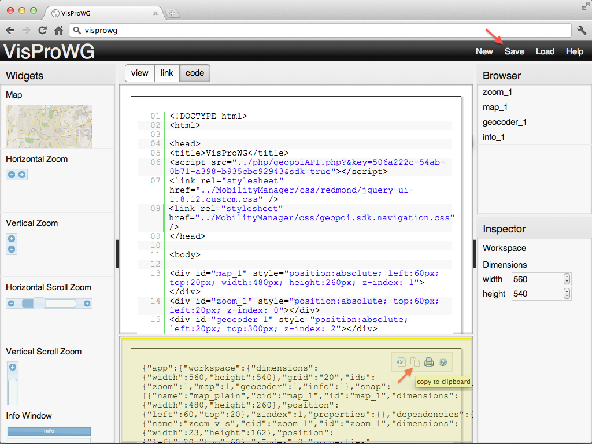
Lo stato corrente del progetto può essere salvato in ogni momento agendo sul bottone Save.
La stringa rappresentante lo stato corrente del progetto viene presentata subito sotto alla schermata per il prelevamento del codice e allo stesso modo può essere copiata negli appunti, agendo li dove indicato in figura.
Ripristino dello stato
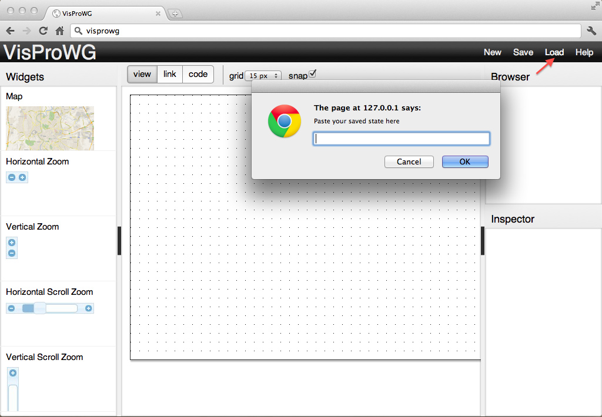
Lo stato di un progetto può esssere ripristinato in qualunque momento agendo sul bottone Load.
Viene presentata una finestra nella quale si richiede all’utente di inserire la stringa che descrive lo stato salvato.
Effettuato il ripristino dello stato l’utente può continuare a lavorare normalmente sul progetto.